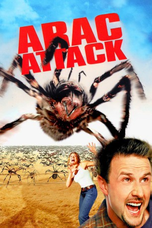

#4979 Arac Attack - Angriff der achtbeinigen Monster
Alternativ: Eight Legged Freaks
 
 IMDB-Wertung: 5.4 / 10
IMDB-Wertung: 5.4 / 10  Metascore: 0
Metascore: 0 
Eine Giftmülllagereinrichtung direkt neben einer Spinnenfarm mit vielen verschiedenen Arten? Ganz schlechte Idee! Und wie es nun einmal geschehen muß, gerät der giftige Abfall ins Spinnenfutter, was einige sehr beunruhigende Wachstumsschübe zur Folge hat. Kein Wunder also, daß Chris McCormack und Sheriff Sam Parker bald ihre liebe Not haben, lebend aus ihrer Kleinstadt herauszukommen, denn die achtbeinigen Monstren sind bald überall...
Jahr: 2002
Dauer: 91 Minuten
FSK: 12
Land: USA Studio: Warner Bros.Tonspuren: DD5.1 - ,
Untertitel:
Auflösung: 1080p (1920x784) Größe: 4392 MB
Genre: Action, Thriller, Horror, Sci-Fi, Komödie
Regisseur: Ellory Elkayem
Drehbuch: John Mattson
Soundtrack:
Darsteller:
 David Arquette als Chris McCormick
David Arquette als Chris McCormick Kari Wuhrer als Sheriff Samantha Parker
Kari Wuhrer als Sheriff Samantha Parker- Scott Terra als Mike Parker
 Scarlett Johansson als Ashley Parker
Scarlett Johansson als Ashley Parker Doug E. Doug als Harlan Griffith
Doug E. Doug als Harlan Griffith Rick Overton als Deputy Pete Willis
Rick Overton als Deputy Pete Willis Leon Rippy als Wade
Leon Rippy als Wade- Matt Czuchry als Bret
- Jay Arlen Jones als Leon
 Eileen Ryan als Gladys
Eileen Ryan als Gladys- Riley Smith als Randy
- Jane Edith Wilson als Emma
- Roy Gaintner als Floyd
- John Storey als Mark
- Randi Klein als Waitress #1
 John Ennis als Cop #1
John Ennis als Cop #1- Ryan C. Benson als Cop #2
 Tom Noonan als Joshua Taft , uncredited
Tom Noonan als Joshua Taft , uncredited- Matt Holwick als Larry
- Jack Moore als Amos
- Don Champlin als Leroy
- David Earl Waterman als Norman
- Terey Summers als Waitress #2
- Bruiser als Himself
- Debbie Overbey als Girl in window , uncredited
Datei: X:\2002\Arac Attack - Angriff der achtbeinigen Monster (2002, FSK12, 1920x784).mkv seit 07.12.2016
Festplatte: HD 1996-2002
 Es gibt insgesamt 93 Filme in der Gruppe '2002'
Es gibt insgesamt 93 Filme in der Gruppe '2002'